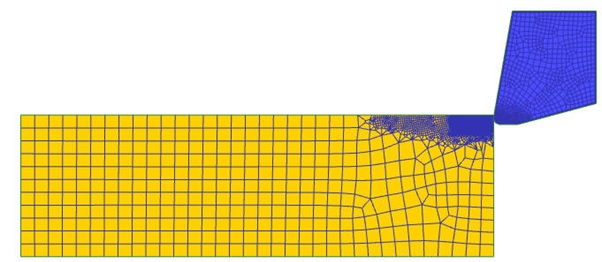
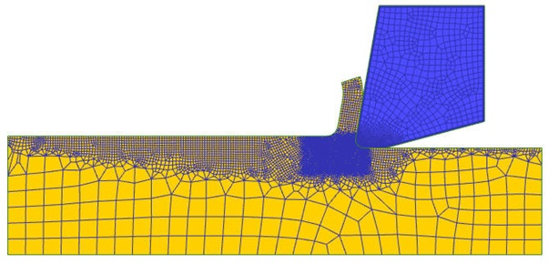
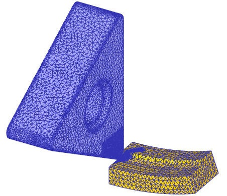

Cutting Operation template setup is designed for guiding user to setup different types of Cutting processes. The template simplifies the cutting process and models it. The template can be used to study tool wear, tool temperature at interface, chip shape and cutting forces. A typical Cutting setup consists of simplified workpiece and Tool. Template also provides options to model steady-state analysis for cutting processes to reduce the computation time. Typical 2D and 3D cutting processes modelled in 2D and 3D are shown in Fig. 39.1., Fig. 39.2. and Fig. 39.3. DEFORM uses “openscad” and “gmsh” tools to generate 3D geometry of the cutting tools and user must make sure it is available in. “C:\Program Files\SFTC\DEFORM\v*.*\Machining\” and at 3D level “C:\Program Files\SFTC\DEFORM\v*.*\3D\ Machining\” and at 2D level “C:\Program Files\SFTC\DEFORM\v*.*\2D\Machining\”, these folders also consists of primitive geometries of the cutting tools. Using this template user can model,
In 2D:
Transient analysis of cutting process
Steady-state analysis of cutting process
In 3D:
Turning
Milling
Boring
Drilling

2D Cutting (Transient analysis type)

2D Cutting (Steady-state analysis type)

3D Cutting Setup
Related Topics: